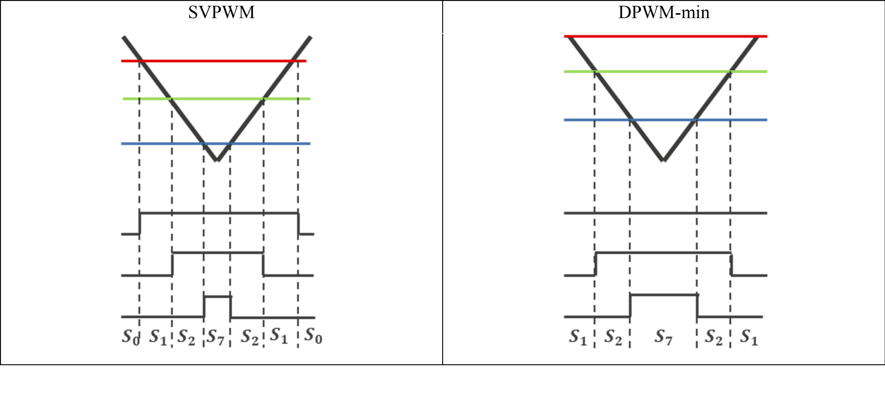

In the sample program, the voltage to be input to the motor is generated by pulse-width modulation (PWM). A module in this sample program calculates the PWM duty cycle. In addition, a modulated voltage can be output to improve the voltage utilization. The modulation operation is specified through the API of the current control module. In this sample program, one of two pulse-width modulation drive modes can be selected.
In vector control of a permanent magnet synchronous motor, the desired voltage command values for each phase will generally be generated sinusoidally. The voltage utilization as applied to the motor (in terms of line voltage) is limited to a maximum of 86.7% with respect to the inverter bus voltage. When the sinusoidal modulation mode is used, the voltage unitization does not reach 100%, so the best performance may not be obtained from the inverter.
The modulation rate m is defined as follows in this mode.
\[m = \frac{V}{E}\] m: Modulation rate, V: Command value voltage[V], E: Inverter Bus Voltage[V]
In the sinusoidal modulation mode, if the generated value is used as-is for the modulation wave for PWM generation, the voltage utilization as applied to the motor (in terms of line voltage) is limited to a maximum of 86.7% with respect to the inverter bus voltage.
Therefore, as shown in the following expression, the average of the maximum and minimum voltage command values is calculated for each phase and the value obtained by subtracting the average from the voltage command value of each phase is used as the modulation wave. As a result, the maximum amplitude of the modulation wave is multiplied by\(\frac{\sqrt{3}}{2}\), while the voltage utilization becomes 100% and line voltage is unchanged.
\[ \begin{pmatrix} V_{u}' \\ V_{v}' \\ V_{w}' \end{pmatrix} = \begin{pmatrix} V_{u} \\ V_{v} \\ V_{w} \end{pmatrix} + \mathrm{\Delta}V\begin{pmatrix} 1 \\ 1 \\ 1 \end{pmatrix} \]
\(\because\Delta V = - \frac{V_{\max} +
V_{\min}}{2}\), \(V_{\max} = max\left\{
V_{u},\ V_{v},\ V_{w} \right\}\), \(V_{\min} = min\left\{ V_{u},\ V_{v},\ V_{w}
\right\}\)
\(V_{u},V_{v},V_{w}\): Voltage command values
of U, V, and W phases
\(V_{u}',V_{v}',V_{w}'\): Voltage
command values of U, V, and W phases for PWM generation (modulation
wave)
The modulation rate m is defined as follows.
\[m = \frac{V'}{E}\] m: Modulation rate, V’: Phase voltage command for PWM generation[V], E: Inverter Bus Voltage[V]
In the two-phase modulation mode, one of the three phases is saturated to either the positive or negative DC bus voltage in order to reduce switching losses, while maintaining the same voltage utilization as the space vector pulse-width modulation (SVPWM) method.
Therefore, as shown in the following expression, a zero-sequence
voltage is injected equally into the three-phase sinusoidal voltage
command values generated by the FOC algorithm, and the corrected voltage
command values are used as the modulation wave for PWM generation.
As a result, the line-to-line voltage applied to the motor remains
unchanged.
\[ \begin{pmatrix} V_{u}' \\ V_{v}' \\ V_{w}' \end{pmatrix} = \begin{pmatrix} V_{u} \\ V_{v} \\ V_{w} \end{pmatrix} + \Delta V \begin{pmatrix} 1 \\ 1 \\ 1 \end{pmatrix} \]
\[ \because\; \Delta V = -\frac{E}{2} - \min\left\{ V_{u},\ V_{v},\ V_{w} \right\} \]
\(V_{u}, V_{v}, V_{w}\): Voltage
command values of U, V, and W phases
\(V_{u}', V_{v}', V_{w}'\):
Voltage command values of U, V, and W phases for PWM generation
(modulation wave)
By generating the zero-sequence voltage so that the minimum phase voltage is saturated to the negative DC bus voltage, one phase is clamped and its switching operation is stopped, thereby reducing switching losses.
The modulation rate \(m\) is defined as follows.
\[ m = \frac{V'}{E} \]
\(m\): Modulation rate
\(V'\): Phase voltage command for
PWM generation [V]
\(E\): Inverter Bus Voltage [V]
Compared with SVPWM, which performs six switching operations within
one carrier period, DPWM realizes the same space vector with only four
switching operations by selecting the zero vector that clamps one
phase.
Ideally, this reduces the number of switching operations to two-thirds
of that of SVPWM.
